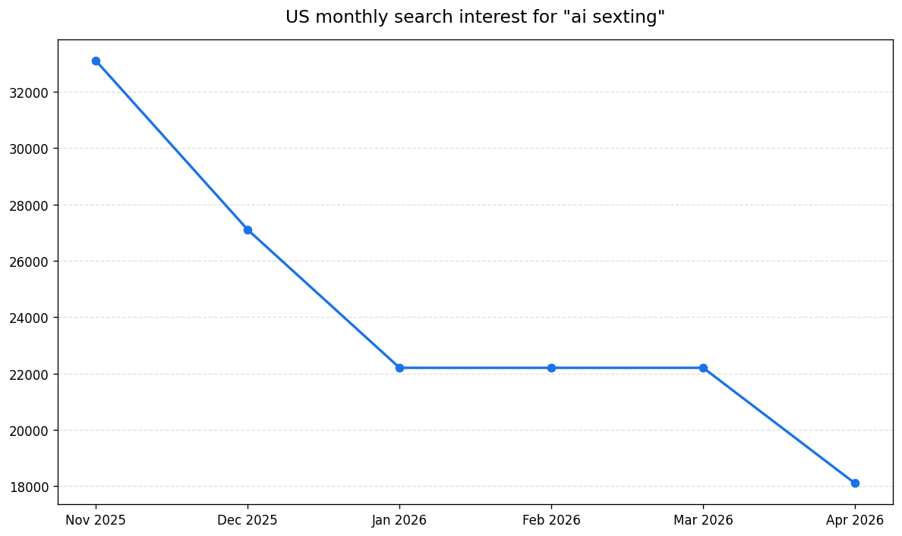
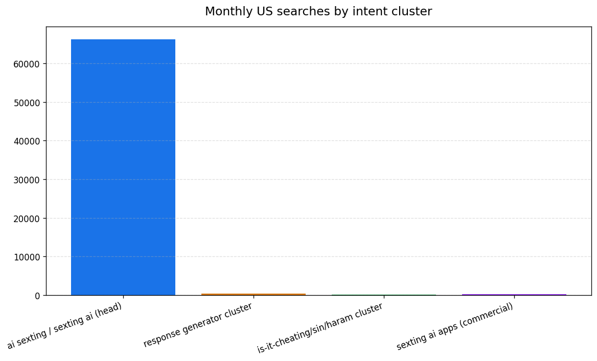
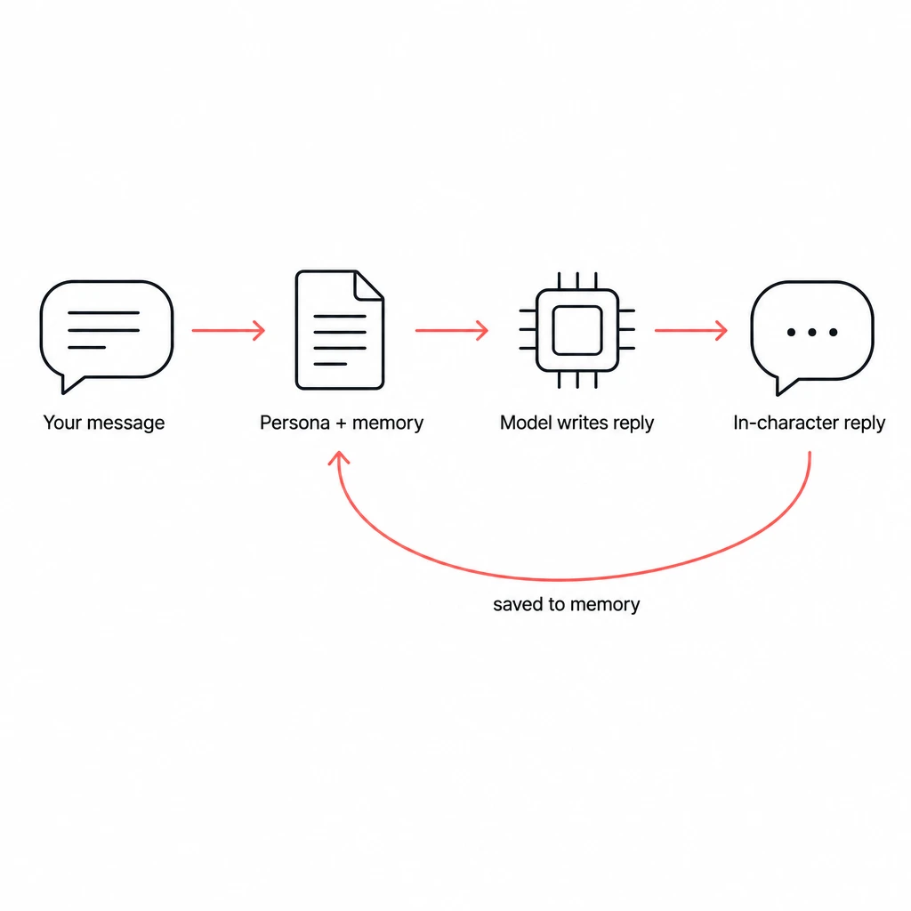
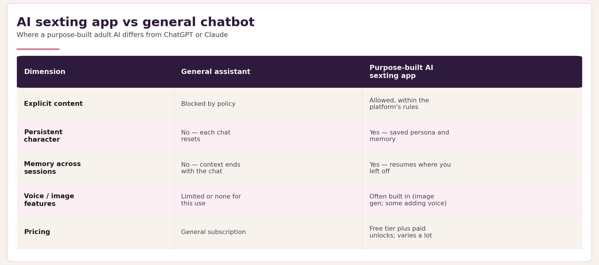
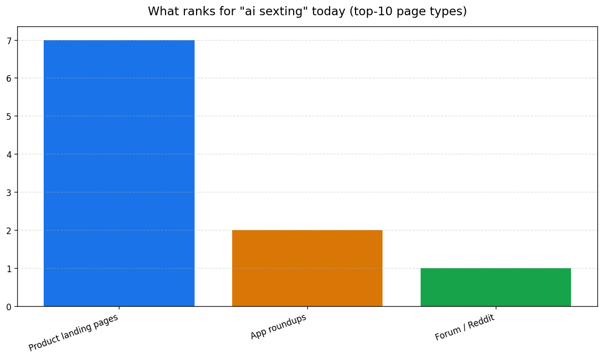
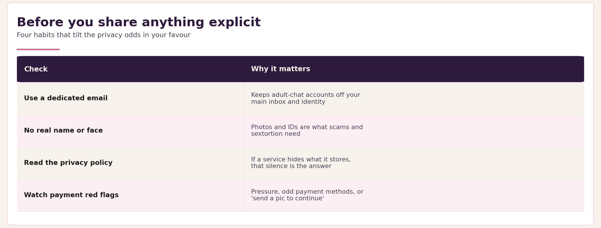
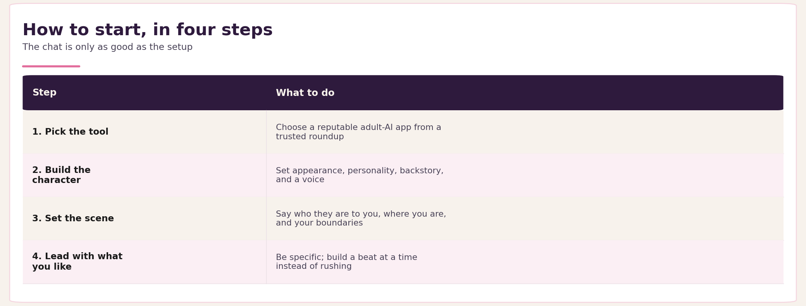

AI Sexting: What It Is and How It Actually Works
Search "ai sexting" and almost every result wants to sign you up. Free chat here, ten apps ranked there, an affiliate link under each one.
What you rarely get is the plain answer. What is this? What's actually happening when the bot replies? Is it safe to do at all?
This is the explainer, not the sales page. AI sexting is adult roleplay with a chatbot built for it. That's the short version.
The longer version is more useful. Once you see how the technology works, the privacy questions and the "is this even okay" questions get a lot clearer. You should be 18 or older to be here, and this guide assumes you are.
So here's the honest tour. What AI sexting is, what happens behind each reply, whether your chats stay private, whether it counts as cheating, and how to start well. When you want the "which app" answer, we point you to the right place instead of padding this out with a leaderboard.
What AI sexting actually is
AI sexting is sexually explicit conversation with an AI chatbot designed for adult content, instead of with another person.
You type. The character responds in kind. The scene builds from there. Flirting, roleplay, fantasy — whatever you'd do over text with a person, pointed at software instead.
It's text-first today. Some apps let you generate images mid-chat, and a few are starting to add spoken replies and calls. But the core is a written back-and-forth, the same shape as human sexting.
Think of it as one slice of the wider "AI companion" category. The same technology that powers AI girlfriends and boyfriends gets pointed at adult chat. If you've heard the term "AI girlfriend," AI sexting is one of the things people do with one.
Why do people use it? It's judgment-free. It's available at 3 a.m. It's customizable in a way a human partner isn't.
For some it's a low-pressure way to explore what they're into, or to practice saying it out loud. For others it fills a gap in human contact, or adds to the contact they already have.
The demand is real, and honest information is scarce. By our count of current search data, the phrase "ai sexting" and its twin "sexting ai" pull tens of thousands of US searches a month between them — yet the pages that rank are conversion funnels and app lists.

You can see why people get frustrated. Forum threads on the topic keep hitting the same wall: the mainstream bots they already use, like ChatGPT and Claude, are too locked down for this. Replika, once a go-to, stripped out its erotic roleplay back in early 2023, and the backlash was severe enough that moderators posted suicide-prevention resources.
And the search demand bunches around the plain question, not the purchase. The head "what is it" term dwarfs the "which app" and "is it cheating" clusters — which is exactly the gap this guide fills.

So people go looking for tools that aren't restricted the same way. That's the what. The how is where it gets interesting.
How AI sexting works under the hood
Every reply you get is a language model predicting the next words in a scene. It's steered by three things: the character's personality, your last message, and a memory of everything said so far.
Here's the loop in plain English.
You send a message. The model reads it alongside the character's persona — their name, their vibe, the scenario you set up — plus a running memory of the conversation. It writes a reply in that character's voice. Then the exchange gets saved, so the next reply stays consistent with the last.

Two terms worth defining, since the marketing pages never bother.
A large language model is a system trained on huge amounts of text to predict likely next words. That prediction is what feels like talking.
Fine-tuning means taking that model and adjusting it for a specific style — here, adult roleplay instead of customer support.
Memory is the part that matters most. It's why a purpose-built companion feels different from pasting an explicit prompt into a general chatbot.
The companion remembers your name. It remembers the boundaries you set and the scene you're three messages into. A one-off prompt forgets all of it the moment you close the window.
Tools like the AI Companion Creator exist to give that memory something to be consistent about. You define a character's looks, personality, backstory, and voice up front. The chat then stays in character, because there's a character to stay in. If you want the full build, our guide on how to make an AI girlfriend walks through every field.
When images show up inside a chat, that's a second model doing a separate job. The chat model writes. The image model draws. They're triggered from the same conversation but they aren't the same thing.
That difference — persistent persona and memory — is also why a general chatbot and a purpose-built adult AI feel worlds apart. Worth seeing side by side.
AI sexting apps vs general chatbots
General assistants like ChatGPT and Claude block explicit content by design. Purpose-built AI sexting apps are tuned for it, with saved characters, memory, and fewer hard stops — inside their own rules.
That's the whole difference in a sentence. The details are worth seeing laid out.

One honest caveat. "Tuned for it" is not "anything goes."
Every legitimate platform still has rules: no minors, no real-person likenesses, no illegal content. The ones promising "no filter" are making a marketing claim, not a legal one. We unpack that gap in AI chatbot no filter.
A purpose-built app is less restricted than a mainstream assistant. It isn't lawless. Don't trust one that pretends to be.
On the purpose-built side, the persistent-character and image pieces are concrete. A tool like the AI Companion Creator keeps the persona and memory, and AI Image Generation handles pictures from inside the chat.
Which specific app is best depends on what you want, and we keep that comparison in one place. See our roundup of the best AI sexting apps instead of re-ranking them here. It's worth knowing what you're up against when you search: the top results are almost entirely product pages and app lists.

Picking a dedicated app raises the question you should ask before you type anything explicit. Where does this go, and who can see it?
Is AI sexting private and safe?
Treat every explicit chat as data that lives on someone else's server. Privacy depends entirely on the platform, so check before you share anything that identifies you.
Most platforms store your conversations. Some may use them to improve their models, which means your chats could become training data.
Neither is automatically sinister. But it's your job to know which is true before you get explicit.
Read the privacy policy and the data-retention terms. If a service won't tell you what it keeps, or for how long, that silence is your answer.
There are real risks worth naming plainly, without the fearmongering.
"AI sexting bots" that pop up on Telegram and WhatsApp are frequently scams, fishing for payment or content. And generative AI has made sextortion easier — the FBI warned in 2023 that criminals now turn ordinary photos into fake explicit images to extort people, with many victims unaware until someone else flagged it. The pressure can land on people who never sent anything real.
The defense is boring and it works. Never send real photos or identifying details to a service you don't trust.
A short checklist keeps you on the safe side:
- Use a dedicated email, not your main one.
- Keep your real name and face out of it.
- Prefer platforms with a clear, readable privacy policy over ones that hide it.
- Watch for payment red flags: pressure, odd payment methods, "send a pic to continue."

None of this guarantees safety. It tilts the odds. For the longer version, work through our AI companion safety checklist before you start.
Privacy is the practical question. The next one is more personal: is this okay to do at all?
Is AI sexting cheating, a sin, or healthy?
Whether AI sexting counts as cheating is a question about your relationship's agreements, not a verdict anyone can hand you. The same goes for whether it's healthy. Both depend on you.
This is one of the most-searched angles on the topic. People ask whether it's cheating, whether it's a sin, whether it's haram. Most pages dodge it.
Here's the honest version.
If you're in a relationship and you'd hide your AI chats from your partner, that instinct is worth listening to. The hiding is usually the tell, not the activity.
Single, or doing it with a partner who's fine with it? Then it's a private choice that's nobody else's business.
The religious and moral framing depends on your own beliefs, and this isn't the place to settle that. Only to say the question is legitimate, and you're allowed to ask it without shame.
If your faith treats explicit fantasy as off-limits, an AI on the other end doesn't change that calculus much. If it doesn't, you already have your answer.
On healthy: it can be a low-pressure space to explore desire, build confidence, or get through a lonely stretch. It tips into a problem when it starts replacing connection you actually want, or when it stops feeling like a choice.
If you've drifted from "I enjoy this" to "I can't stop," that's worth attention.
We dig into the relationship side in is having an AI girlfriend cheating, including a self-test you can run.
Decided it's right for you? Here's how to start, and start well.
How to start AI sexting (and do it well)
Pick a purpose-built app, set up a character you actually want to talk to, set the scene, and lead with what you like. The quality of the chat tracks the quality of your setup more than anything else.

Start with the tool. Choose a reputable adult-AI app — our best AI sexting apps roundup is the shortlist.
Then build or pick your companion. In the AI Companion Creator you set appearance, personality, backstory, and a voice. That's what makes the later chat feel like someone, rather than a text generator.
Want the full walkthrough? We cover it step by step in how to make an AI girlfriend.
Then set the scene before you go explicit. Tell the character who they are to you and where you both are. Establish boundaries up front: what's on the table, what isn't.
The model mirrors the tone you set. A clear, confident opening gets you a better partner than a flat "hey."
The craft is the same as good human sexting. Be specific. Give the character something to react to instead of waiting to be entertained. Build the scene a beat at a time rather than rushing the finish.
Consent and boundaries still matter even though the other side is software. Partly because it sets the tone the model hands back. Partly because it's a good habit to keep.
One thing to expect. Some platforms are starting to add spoken replies and calls inside the chat, so text-only won't be the only option for long. For now, getting the text right is the whole game.
The honest version
AI sexting is adult roleplay with a chatbot built for it.
Once you understand the technology — a model predicting a scene, steered by persona and memory — the rest stops being mysterious. The privacy trade-offs become things you can check. The ethics become a conversation you can have with yourself. And starting becomes a setup problem, not a leap of faith.
So treat it like the adult choice it is. If you're ready to pick a tool, start with the app roundup. If you're ready to build a companion worth talking to, the AI Companion Creator is where that happens. 18 and over, on your own terms.
Editor notes
Citations resolved
- Search-volume claim ("tens of thousands of US searches a month"): self-attributed to our own search-data analysis with neutral phrasing ("By our count of current search data"). No external public source publishes this exact figure; internal data tooling cannot be named per the reader-facing internal-stack rule. Claim softened to "between them" to stay defensible.
- Replika erotic-roleplay removal (early 2023): Hanson & Bolthouse, Socius (SAGE), 2024 — peer-reviewed analysis of the February 2023 ERP removal and the user backlash (including subreddit suicide-prevention posts). Primary-adjacent scholarly source preferred over the trade-press coverage (Vice, Reuters) that also documents it.
- AI-enabled sextortion: FBI / IC3 Public Service Announcement, Alert I-060523-PSA (June 5, 2023) — official source confirming criminals manipulate benign photos into explicit deepfakes to extort victims, "many… unaware their images were copied, manipulated, and circulated."
Internal links added (from 2-reference/ai-sexting.md)
- best AI sexting apps — canonical app roundup (cannibalization guard: linked, not re-ranked). x3 across getting-started/comparison/conclusion.
- AI Companion Creator and AI Image Generation — live product surfaces.
- how to make an AI girlfriend — setup walkthrough (added one new contextual link in the "how it works" section).
- AI companion safety checklist — privacy section.
- is having an AI girlfriend cheating — ethics section.
- AI chatbot no filter — added on the "no filter is a marketing claim" line (general-vs-purpose-built contrast).
Voice-flagged statements (review — NOT auto-linked)
Per the verify-claims two-tier rule, these are opinionated voice, not citation-needing claims; left unlinked deliberately: - "Some apps let you generate images mid-chat, and a few are starting to add spoken replies and calls." - "the mainstream bots they already use, like ChatGPT and Claude, are too locked down for this" - "Most platforms store your conversations." - "Most pages dodge it." - "Some platforms are starting to add spoken replies and calls inside the chat…"
Must-cite coverage
2/2 genuine factual claims now carry real sources (Replika 2023; FBI sextortion). The third (search volume) is self-attributed analysis with neutral phrasing — no fabricated source. No [link] or [CITATION NEEDED] markers remain.